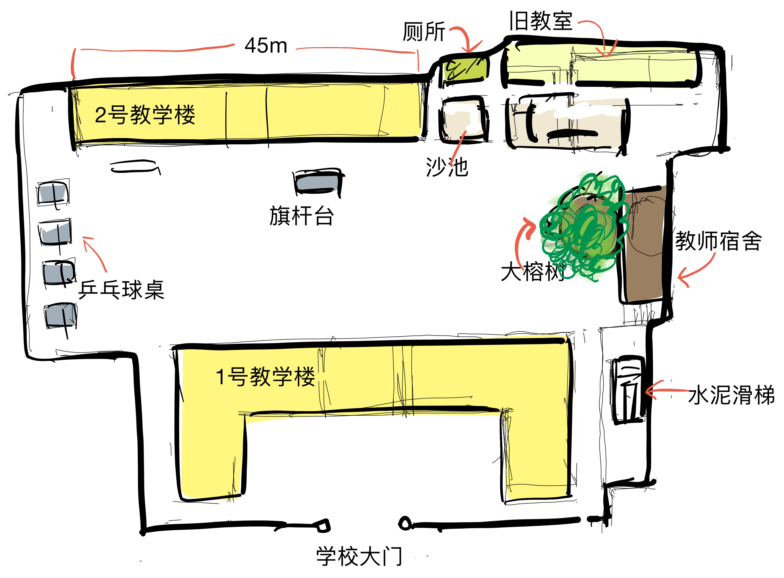
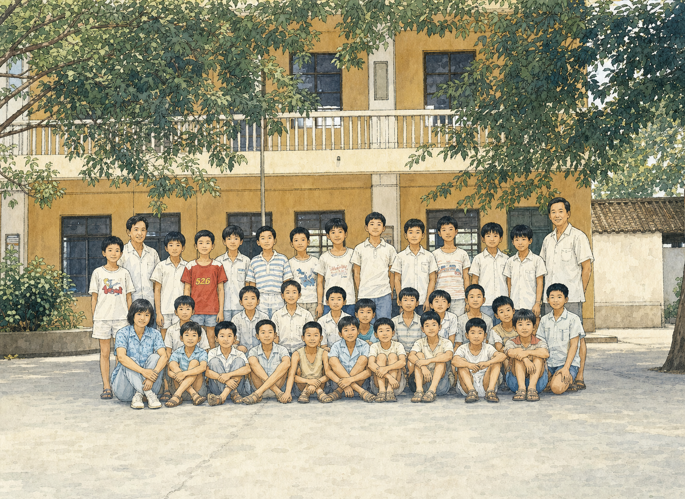
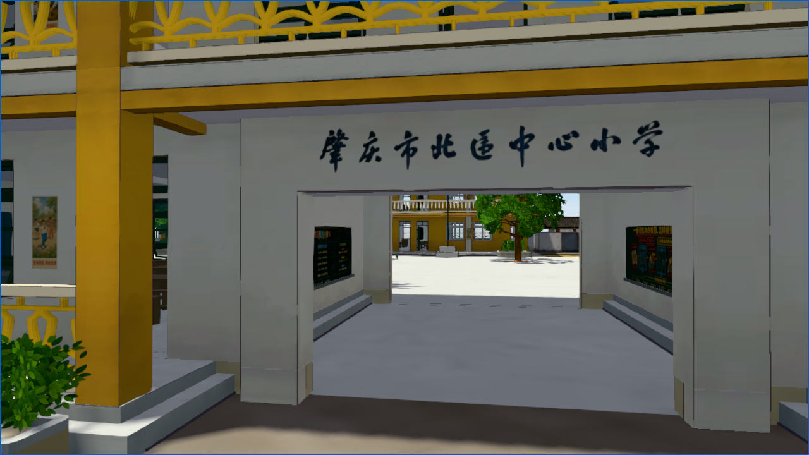
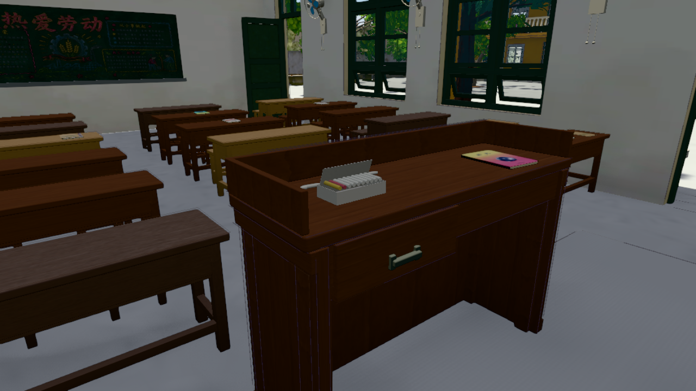
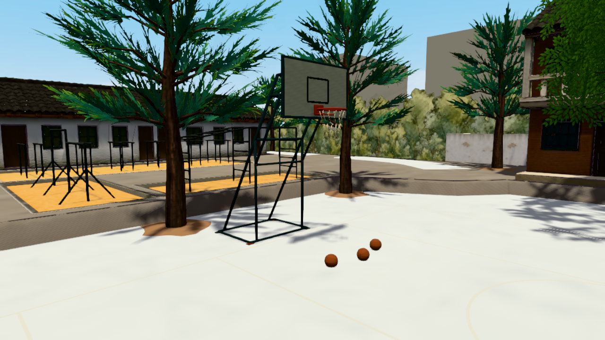
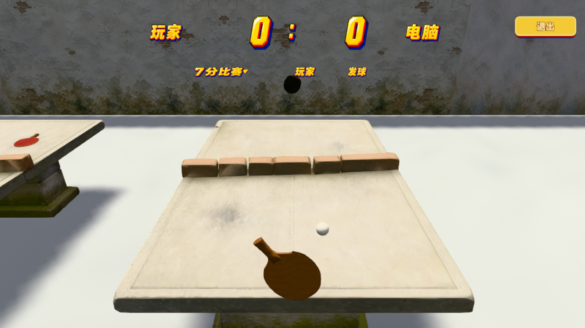
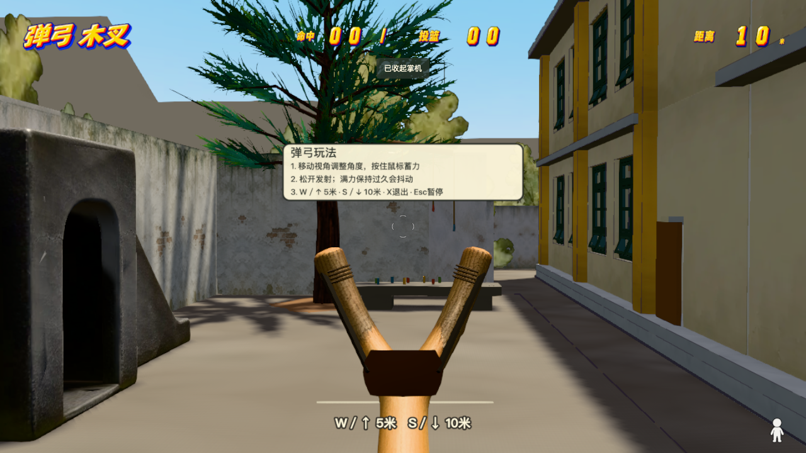
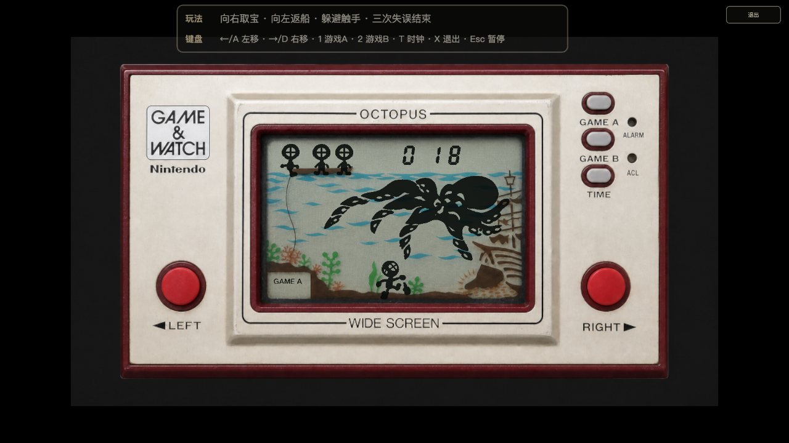

现在网上有很多“AI 做游戏”的内容。一句提示词，一个场景，一个会动的角色，一套看起来像游戏的玩法。
画面很炫，也证明了模型的生成能力。但模型可以自由发挥。它生成城堡、森林还是学校，并不重要。
4Lite 不是这样做出来的。它不是大模型自由想象出来的 Demo，而是一个真实、完整、可以走进去玩的项目。
这个项目的所有代码都由 AI 开发。所有正式美术素材也都由 Agent 制作。我没有写过一行代码，也没有制作过一幅正式图片。我提供的是记忆、草图、反馈和判断。
我们要还原的不是“某一所怀旧学校”，而是我记忆里那一所学校。校门在哪里，两栋教学楼怎样相对，厕所入口怎样转弯，旧教室有几扇门窗，大榕树长在什么位置，都不能随意决定。
看起来合理还不够。它必须像我记忆中的学校。
项目开始时，我只有两张普通照片和一份在 iPad 概念画板上凭记忆画出的草图。

没有建筑图纸。没有测绘数据。也没有覆盖全校的影像。照片只能看见局部。草图能说明空间关系，却没有准确比例。更多信息藏在记忆里，常常要等我看见模型、走进场景，才会重新出现。
本文不展示两张原始合照。下面使用的是根据它们转绘的漫画版本。

我们从这个起点，搭出了一座八十年代的校园。它不只是一片三维场景，而是一个有空间、有互动、有玩法的完整游戏：
从三份资料到一座能够进入、观察和游玩的校园，中间没有一个“一键生成”的时刻。
如果只想生成一所“像八十年代”的学校，事情会简单很多。大模型可以补上墙、窗户、树木和操场，把空白填满。
但这正是我们最需要避免的事情。资料越少，大模型越容易用“通常如此”代替“原来如此”。结果可能漂亮，却不是这所学校。
所以，难点不是让 AI 多生成，而是阻止它擅自补全。我们把信息分成四类：
Agent 根据这些边界，把记忆整理成文字、图纸和参数。它不替我决定记忆是什么。“忠实还原”也从一种感觉，变成了一套可以检查的方法。
开发不是从一份完整需求开始的。很多记忆要等第一版出现后才会回来。
我提供照片、草图和记忆。Agent 把它们变成平面、尺寸、灰盒、模型和交互。我再进入浏览器，判断哪里太高，哪里太窄，哪里不像。正确的结果留下，错误的继续改。
草图不能当三维图纸，就先确认空间关系，再画米制平面。平面看着正确，走进去却压迫，就用第一人称灰盒调整。旧教室的门窗错了，资料、图纸、模型和碰撞一起更新。大榕树不像，就继续改树形、枝叶、材质和尺度。

从“能看”到“能玩”，又出现了碰撞、存储、游戏手感、触屏、加载和性能问题。Agent 把问题拆开，提出方案，制作版本，运行测试。我负责试玩和判断。



有些玩法来自校园里的具体角落和童年物件。弹弓可以瞄准、蓄力和发射。旧掌机也不是装饰，而是一台可以计分、失败和重新开始的游戏。


没有采用的技术方案也会留下记录。这样，同一条弯路不必再走一次。
4Lite 不是让 AI 机械执行，也不是等待 AI 全自动完成。
我提供亲历记忆、空间直觉、审美和最终判断。Agent 整理证据、绘制图纸、建立模型、编写代码、制作材质、设计交互、测试并维护记录。
人不必预先知道所有技术答案。Agent 也不能越过人决定作品的方向。我们用一个个可以看、可以走、可以玩的版本交换判断。
人负责方向、意图和判断。Agent 提供专业能力和生产力。资料、版本、测试和记录把双方连接起来。
这次开发用 iPad 概念画板绘制草图，用 SVG 整理平面和结构。三维模型主要在 Blender 中直接制作，也有一部分使用腾讯混元 3D 生成。Three.js 和 WebGL 把这些内容变成一座可行走的校园。图像工具负责概念图、材质和年代物件。Vite、Playwright、性能测试、视觉回归、版本控制和工程归档，让项目可以持续修改。
后面的连载会从那两张照片和一份草图开始。它会逐篇介绍，我怎样与 Agent 使用这些工具，整理资料、搭建灰盒、确定美术、制作资产、设计玩法、解决性能问题，最后完成一个真实、完整、忠于人的想法的项目。
这不是“大模型一次生成游戏”的故事。它讲的是，一个人和一组 Agent 怎样从三份资料和零散记忆出发，建成一座可以进入、可以验证、也可以继续生长的校园。
人负责记得，Agent 负责把记忆变成可以验证的空间；然后人走进这个空间，再帮助 Agent 把它变得更像记忆。